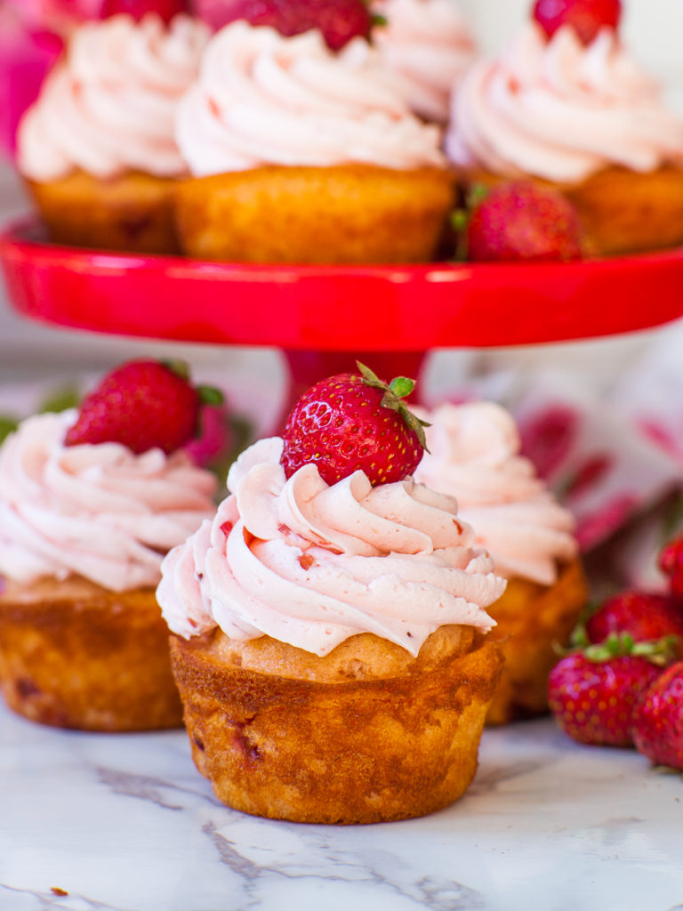

Strawberry Cupcakes
This recipe is for strawberry cupcakes! Very delicious, very yummy
Strawberry Cupcake Recipe

For the Strawberry Cupcakes
- 3 large eggs
- 3/4 cup whole milk
- 1/2 cup cooking oil, canola, vegetable, avocado, olive
- 3/4 cup white granulated sugar
- 1 tsp vanilla extract
- 1 tsp strawberry extract or emulsion
- 1 1/2 cups all-purpose flour
- 3 tsp baking powder
- 1/4 tsp salt
- 1 cup diced strawberries
Process
-
Preheat the oven to 350F/177C. Line 18 cupcake tins with paper liners,
or spray the insides with a baking spray.
-
Into a large mixing bowl, add the wet ingredients plus the sugar: eggs,
milk, oil, sugar, vanilla and strawberry extract. Using a mixer or a
hand whisk, whisk on high speed for 2 to 3 minutes, until the mixture is
smooth and the eggs are well beaten. In a separate bowl, combine the dry
ingredients: flour, baking powder and salt. Sift the dry ingredients
into the cake batter. Mix on medium speed for about 1 minute, just until
the dry ingredients are incorporated. Watch my video recipe to see how
it’s done.
-
Next, gently fold in the diced strawberry. Using a measuring scoop, fill
each cupcake tin about 1/2 to 3/4 of the way full. Bake in the preheated
oven for 18 to 22 minutes, until the tops of the cupcakes are golden
brown. Remove them from the oven and let the cupcakes cool completely on
a wire rack.